X351–X400¶
Parry Circle, Morley/Yff Centers & Pedal Centroids
The Parry circle center, Morley trisector centers, Yff equal-parallelians, trisected-perimeter, and equilateral-cevian points, Kenmotu point, and centroids of pedal and cevian triangles.
X351–X400 (Parry Circle, Morley/Yff Centers & Pedal Centroids) — 15 representative centers (from 50 in collection) constructed on acute reference triangle \((a, b, c) = (5, 6, 7)\) with unit baseline AB = \(1\).¶
X351CENTER OF THE PARRY CIRCLE
X351 is the center of the Parry circle introduced in TCCT (Art. 8.13) as the circle that passes through Xi for I = 2, 15, 16, 23, 110, 111, 352, 353.
X352INVERSE-IN-CIRCUMCIRCLE OF X353
X352 = inverse-in-circumcircle of X353
X353INVERSE-IN-BROCARD-CIRCLE OF X111
Let AaBaCa, AbBbCb, AcBcCc be the A-, B- and C-anti-altimedial triangles. Let A' be the trilinear product Aa*Ab*Ac, and define B' and C' cyclically. Triangle A'B'C' is the anticomplementary triangle of the 1st Brocard triangle, and is similar to the anti-orthocentroidal triangle, with similitude center X353. (Randy Hutson, November 2, 2017)
X354WEILL POINT
X354 = crosspoint of X1 and X7
X355FUHRMANN CENTER
X355 = the center of the Fuhrmann circle, defined as the circumcircle of the Fuhrmann triangle A″B″C″, where A″ is obtained as follows: let A' be the midpoint of the circumcircle-arc having endpoints B and C and not containing A; then A″ is the reflection of A' in line BC. Vertices B″ and C″ are obtained cyclically. (Other constructions of A″, and hence the Fuhrmann triangle, follow: (1) Let IA be the reflection of X1 in BC; then A″ is the circumcenter of IABC. (2) Let JA be the reflection of the A-excenter in BC; then A″ is the circumcenter of JABC.
X356MORLEY CENTER
X356 is the centroid of the Morley equilateral triangle. For a discussion of the theorem and extensive list of references, see
X3571st MORLEY-TAYLOR-MARR CENTER
X357 is the perspector of Morley triangle and ABC, and also the Hofstadter 1/3 point. See
X3582nd MORLEY-TAYLOR-MARR CENTER
X358 is the perspector of the adjunct Morley triangle and ABC, and also the Hofstadter 2/3 point.
X359HOFSTADTER ONE POINT
The Hofstadter ellipse E(1/2), given by \(x^{2}\) + \(y^{2}\) + \(z^{2}\) - 2yz - 2xz - 2xy = 0, has center X37 and passes through Xi for these i: 244, 678, 2310, 2632, 2638, 2643, 3248, 4094, 4117, 10501, 23063, 24012.
X360HOFSTADTER ZERO POINT
The limit of this point as r approaches 0 is X360. The two Hofstadter points, X359 and X360 are examples of transcendental triangle centers, since they have no trilinear or barycentric representation using only algebraic functions of a,b,c (or sin A, sin B, sin C).
X361-CEVA CONJUGATE OF X1
The isoscelizer equation au(X) = bv(X) = cw(X) has solution X = X361.
X362CONGRUENT CIRCUMCIRCLES ISOSCELIZER POINT
The isoscelizer equations u(X)/a = v(X)/b = w(X)/c have solution X = X362.
X363EQUAL PERIMETERS ISOSCELIZER POINT
If X = X363, the isoscelizer triangles of X have equal perimeters.
X364WABASH CENTER (EQUAL AREAS ISOSCELIZER POINT)
If X = X364, the isoscelizer triangles T(X,a), T(X,b), T(X,c) have equal areas.
X365SQUARE ROOT POINT
For a construction of X365, see the note at X2, which provides for a construction barycentric square roots which one can easily extend to a construction for trilinear square roots.
X366ISOGONAL CONJUGATE OF X365
X366 is the isogonal conjugate of X365.
X367CROSSPOINT OF X1 AND X366
X367 is the crosspoint of X1 and X366.
X368EQUI-BROCARD CENTER
The center X for which the triangle XBC, XCA, XAB have equal Brocard angles. Peter Yff proved that X368 lies on the self-isogonal conjugate cubic with trilinear equation f(a,b,c)u + f(b,c,a)v + f(c,a,b)w = 0, where \(f(a,b,c) = bc(b^{2} - c^{2})\) and, for variable \(x : y : z\), the cubics u, v, w are given by u(x,y,z) = \(x(y^{2}\) + \(z^{2})\), v = u(y,z,x), w = u(z,x,y).
X3691st TRISECTED PERIMETER POINT
There exist points A', B', C' on segments BC, CA, AB, respectively, such that AB' + AC' = BC' + BA' = CA' + CB' = (a + b + c)/3, and the lines AA', BB', CC' concur in X369. Near the end of the 20th century, Yff found trilinears for X369 in terms of the unique real root, r, of the cubic polynomial
X370EQUILATERAL CEVIAN TRIANGLE POINT
A point P is an equilateral cevian triangle point if the cevian triangle of P is equilateral. Jiang Huanxin introduced this notion in 1997.
X371KENMOTU POINT (CONGRUENT SQUARES POINT)
There exist three congruent squares U, V, W positioned in ABC as follows: U has opposing vertices on segments AB and AC; V has opposing vertices on segments BC and BA; W has opposing vertices on segments CA and CB, and there is a single point common to U, V, W. The common point, X371, may have first been published in Kenmotu’s Collection of Sangaku Problems in 1840, indicating that its first appearance may have been anonymously inscribed on a wooden board hung up in a Japanese shrine or temple. (The Kenmotu configuration uses only half-squares; i.e., isosceles right triangles). Trilinears were found by John Rigby.
X372{X3,X6}-HARMONIC CONJUGATE OF X371
X372 is the {X3,X6}-harmonic conjugate of X371.
X373CENTROID OF THE PEDAL TRIANGLE OF THE CENTROID
X373 is the centroid of the pedal triangle of the centroid.
X374CENTROID OF THE PEDAL TRIANGLE OF X9
X374 is the centroid of the pedal triangle of X9.
X375CENTROID OF THE PEDAL TRIANGLE OF X10
X375 is the centroid of the pedal triangle of X10.
X376CENTROID OF THE ANTIPEDAL TRIANGLE OF X2
X376 is the centroid of the antipedal triangle of X2.
X377EULER LINE INTERCEPT OF LINE X7X_8
X377 is the {X3,X20}-harmonic conjugate of X21.
X378REFLECTION OF X22 IN X3
X378 is the reflection of X22 in X3.
X379EULER LINE INTERCEPT OF LINE X6X_7
X379 = complement of X31015
X381MIDPOINT OF X2 AND X4
X381 is the point QA-P14 (Centroid of the Morley Triangle) of quadrangle ABCX2 (see http://www.chrisvantienhoven.nl/quadrangle-objects/15-mathematics/quadrangle-objects/artikelen-qa/42-qa-p14.html)
X382REFLECTION OF CIRCUMCENTER IN ORTHOCENTER
X382 is the reflection of circumcenter in orthocenter.

X383EULER LINE INTERCEPT OF LINE X14X_98
X383 = reflection of X1080 in X1513
X384THE CONWAY POINT: EULER LINE INTERCEPT OF LINE X32X_76
X384 = eigencenter of anticevian triangle of X385
X385-HIRST INVERSE OF X6
X385 is the X2-hirst inverse of X6.
X386INVERSE-IN-BROCARD-CIRCLE OF X58
X386 = Brocard-circle-inverse of X58
X387INTERSECTION OF LINES X(1,2) AND X(4,6)
X387 = crossdifference of every pair of points on line X520X649
X388∩X7X_8
X388 = perspector of ABC and 5th extouch triangle
X389CENTER OF THE TAYLOR CIRCLE
X389 = crosspoint of X4 and X54
X390REFLECTION OF GERGONNE POINT IN INCENTER
X390 is the reflection of Gergonne point in incenter.
X391INTERSECTION OF LINES X(2,6) AND X(8,9)
X391 is the {X8,X9}-harmonic conjugate of X346.
X392X(1,6)∩X(10,11)
X392 = X2-of-X1-Brocard-triangle
X393-CROSS CONJUGATE OF X4
X393 = isogonal conjugate of X394
X394-CEVA CONJUGATE OF X3
X394 = isogonal conjugate of X393
X395MIDPOINT OF X14 AND X16
X395 is the center of the (equilateral) pedal triangle of X16, as well as the circumcenter of the pedal triangle of X14.
X396MIDPOINT OF X13 AND X15
X396 is the center of the (equilateral) pedal triangle of X15, as well as the circumcenter of the pedal triangle of X13.
X397CROSSPOINT OF X4 AND X17
X397 is the crosspoint of X4 and X17.
X398CROSSPOINT OF X4 AND X18
X398 is the crosspoint of X4 and X18.
X399PARRY REFLECTION POINT
Let L, M, N be lines through A, B, C, respectively, parallel to the Euler line. Let L' be the reflection of L in sideline BC, let M' be the reflection of M in sideline CA, and let N' be the reflection of N in sideline AB. The lines L', M', N' concur in X399, as proved in
X400YFF-MALFATTI POINT
In 1997, Yff considered the configuration for the 1st Ajima-Malfatti point, X179. He proved that the same tangencies are possible in another way if the circles are not required to lie inside ABC. With tangency points labeled as before, the lines AA', BB', CC' concur in X400.